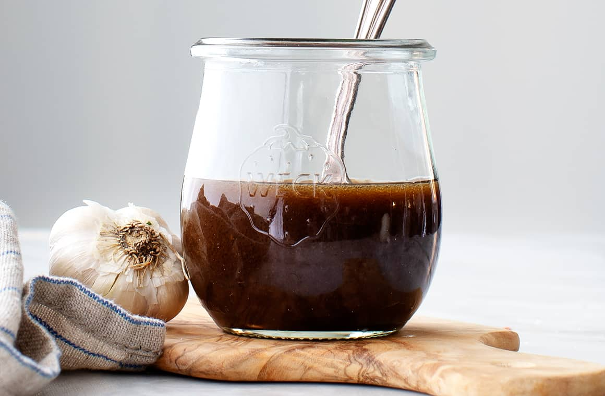

Balsamic Vinaigrette

Description
This is one of my essential recipies that I learned from my family.
At every meal we eat a green salad, dressed with my father's balsamic vinaigrette.
Its quite easy to make and will impress your guests. Feel free to keep this in the refrigerator,
but be aware the oil will solidfy and will need to melt when you use it again.
Ingredients
- 1/2 cup extra virgin olive oil
- 1/4 cup + 1 tbsp balsamic vinegar
- 2 cloves of garlic
- 1 tsp salt
- 1/2 tsp pepper
- 1 tsp dijon mustard
- 1 tsp sugar
- 1 1 tbsp basil
Steps
- Add oil and vinegar to bottle or pyrex mesuring cup
- Finely chop garlic
- Add garlic
- Add the rest of the ingredients
- Mix or shake
- Taste and adjust to your liking
- Was it that easy?!